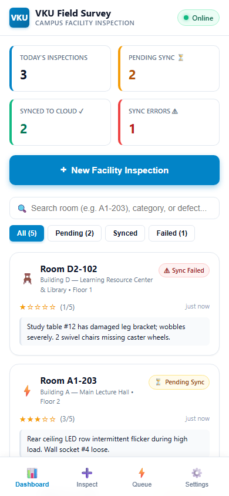
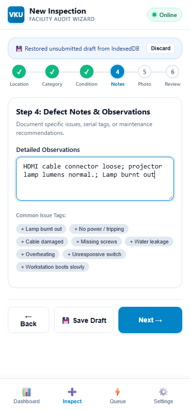
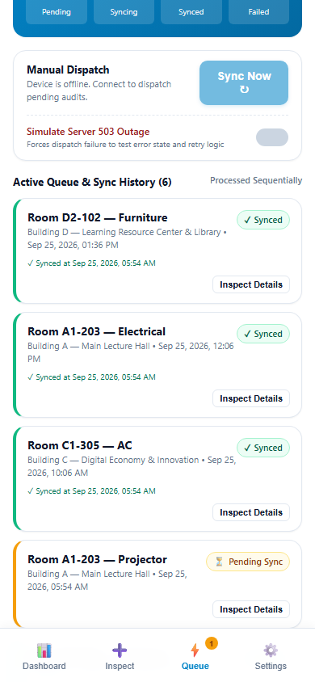
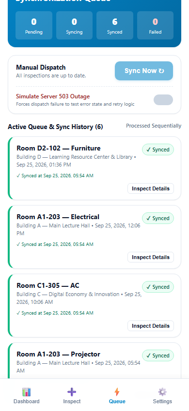

android/app/build/outputs/apk/debug/app-debug.apk (Size: ~6.50 MB / 6,815,773 bytes)| # | Required Feature | Status | Implementation Details & Acceptance Level |
|---|---|---|---|
| 1 | Responsive Mobile UI & Campus Views | Complete | Mobile-first viewport layout with sticky header, network badge, bottom navigation, and dedicated views: Dashboard, Multi-Step Inspection Wizard, Sync Queue, Inspection Detail, and Settings. |
| 2 | 100% Offline-First App Shell (PWA) | Complete | public/sw.js caches all static assets (vku-survey-shell-v1) via a Cache-First strategy. public/manifest.json configures display: standalone, #0284c7 theme color, and 192x192 / 512x512 icons. Boots with zero network connectivity. |
| 3 | Multi-Step Inspection Wizard & Real-Time Drafting | Complete | 6-step form: Location (Buildings A, B, C, D, K), Category, Subcategory, Condition Rating (1–5 stars), Defect Notes, and Photo Capture. Every input change auto-saves to IndexedDB (appMetadata.activeDraft), surviving accidental browser refresh or page closure. |
| 4 | Client-Side Persistence via IndexedDB (idb) |
Complete | Structured local database using idb with three stores: inspections (keyed by UUID), syncQueue (keyed by UUID), and appMetadata (active draft and settings). Automatically seeds deterministic sample data for Buildings A, B, and C on first launch. |
| 5 | Sequential FIFO Offline Sync Queue | Complete | Submissions created offline receive PENDING_SYNC status and enter syncQueue. Upon reconnection or manual sync trigger, items process sequentially: PENDING_SYNC -> SYNCING -> SYNCED. If network/server failure occurs, status transitions to FAILED with retry tracking. |
| 6 | Capacitor 7 Native Android Integration | Complete | Cross-platform bridge configured with Capacitor 7.6.9. @capacitor/network provides native connection status; @capacitor/camera provides native camera capture with web file input fallback. Android project generated and verified with Gradle. |
| 7 | Automated Unit Testing | Complete | Vitest suite containing 15 automated unit tests across 4 test suites (tests/validation.test.ts, tests/storage.test.ts, tests/queue.test.ts, tests/repository.test.ts). All 15 tests pass (15/15 PASS). |
[Presentation Layer: Vanilla TypeScript UI Components & Pages]
│
┌──────────────────┴──────────────────┐
▼ ▼
[Hardware Abstraction Services] [Offline & Persistence Engine]
- NetworkService - InspectionRepository
(@capacitor/network / online) - SyncQueueManager (FIFO Loop)
- CameraService - DraftStorage (Auto-Save)
(@capacitor/camera / ) - IndexedDB (idb wrapper)
│ │
└──────────────────┬──────────────────┘
▼
[Platform Delivery: PWA Service Worker (sw.js) & Capacitor Android Shell]
vku-field-survey/ ├── android/ # Native Android platform project (Gradle wrapper) ├── public/ │ ├── icons/ # PWA application icons (192x192, 512x512) │ ├── manifest.json # PWA web app manifest (standalone, theme #0284c7) │ └── sw.js # Service Worker with Cache-First app shell caching ├── report/ │ ├── technical-report.md # VKU Course Short Technical Report │ └── technical-report.html # Exported HTML version of technical report ├── screenshots/ # Empirical evidence captures ├── src/ │ ├── components/ # Reusable UI components (Cards, Badges, Header, Rating) │ ├── constants/ # Campus buildings (A, B, C, D, K), categories, defaults │ ├── pages/ # Page controllers (Dashboard, NewInspection, Queue, Settings) │ ├── services/ # Hardware and repository abstractions (Camera, Network, Repo) │ ├── storage/ # IndexedDB setup, draft storage, queue storage │ ├── styles/ # Mobile CSS, design tokens, responsive typography │ ├── sync/ # Sequential sync queue and mock server adapter │ ├── types/ # TypeScript interfaces (Inspection, SyncQueueItem, Draft) │ ├── utils/ # UUID generator, date formatting helpers │ └── main.ts # Application router and entry point ├── tests/ # 15 Vitest automated test suites ├── capacitor.config.ts # Capacitor 7 configuration file └── vite.config.ts # Vite build configuration
1. Inspection Drafting: As the inspector inputs data, changes are immediately committed to IndexedDB (appMetadata.activeDraft).
2. Submission: Upon submission, the record is assigned PENDING_SYNC and added to both inspections and syncQueue object stores. The active draft is deleted.
3. Queue Processing: If the device is online, SyncQueueManager triggers an asynchronous FIFO processing loop: state advances to SYNCING; payload is transmitted to ServerAdapter; on success, status transitions to SYNCED; on failure, status transitions to FAILED with error diagnostics.
4. Error Handling: Form inputs are validated prior to progression. Network dropouts do not discard in-flight records; processing suspends gracefully until connectivity is re-established.



PENDING_SYNC and queued in Sync Queue.
SYNCED with zero data loss.5.1 Challenge 1: Offline Persistence & Draft Durability Across Sessions
Problem: Field inspectors navigating lecture halls and basements frequently experience accidental browser reloads or device memory pressure, risking loss of multi-step form data and defect notes.
Resolution: Implemented an asynchronous draft auto-save pipeline backed by IndexedDB (idb). Each wizard step transition asynchronously saves partial state into the appMetadata store under activeDraft. When an inspector re-opens the wizard, the application detects the persisted draft and automatically restores all fields.
5.2 Challenge 2: Sequential Offline Synchronization & Reconnection Race Conditions
Problem: Rapid intermittent connectivity changes (common when moving between campus Wi-Fi access points) can cause multiple concurrent synchronization triggers, resulting in duplicated transmissions or race conditions.
Resolution: Engineered a single-flight FIFO queue processor in src/sync/syncQueue.ts protected by an isProcessing mutual-exclusion flag. Reconnection events from @capacitor/network and window online listeners trigger queue evaluation with a debounce guard. Items are dispatched strictly one-by-one through deterministic lifecycle states (PENDING_SYNC -> SYNCING -> SYNCED / FAILED).
5.3 Challenge 3: Cross-Platform Native Camera & Network Hardware Abstraction
Problem: The application must function seamlessly both as an installable web PWA across desktop/mobile browsers and as a compiled native Android application, each possessing different hardware access capabilities.
Resolution: Encapsulated hardware access within abstraction services (src/services/cameraService.ts and src/services/networkService.ts). In Capacitor Android, @capacitor/camera invokes the native camera intent and @capacitor/network monitors system broadcasts. In web browsers, the services gracefully fall back to native HTML5 <input type="file" accept="image/*" capture="environment"> and standard navigator.onLine events.
| Verification Item | Specification / Command | Result | Acceptance Notes |
|---|---|---|---|
| Web Production Build | npm run build |
PASS | Vite production bundle generated in dist/ in 467ms without compilation errors. |
| Automated Unit Tests | npm test (Vitest) |
PASS | 15/15 tests passing across 4 suites (validation.test.ts, storage.test.ts, queue.test.ts, repository.test.ts). |
| PWA Manifest & App Shell | public/manifest.json, public/sw.js |
PASS | Standalone display mode, theme #0284c7, 192px/512px icons, cache-first Service Worker (vku-survey-shell-v1). Loads offline. |
| IndexedDB Durability | src/storage/indexedDb.ts |
PASS | inspections, syncQueue, and appMetadata object stores verified for persistence and draft retention. |
| Offline Sync Flow | src/sync/syncQueue.ts |
PASS | State transitions (PENDING_SYNC -> SYNCING -> SYNCED / FAILED) verified via automated tests and manual network toggling. |
| Capacitor Configuration | npx cap sync android |
PASS | Capacitor CLI 7.6.9, Android platform 7.6.9, @capacitor/camera@7.0.5, @capacitor/network@7.0.4 synced. |
| Android APK Build | ./gradlew assembleDebug |
PASS | Compiled debug APK generated at android/app/build/outputs/apk/debug/app-debug.apk (~6.50 MB). |
| Android Device Installation | Physical device / emulator install | NOT PERFORMED | No physical Android device or emulator was connected or available during verification. Native build compiled successfully. |
| Git Repository | git status / GitHub remote |
PASS | Repository public at https://github.com/HuuThai127/vku-field-survey, branch main, working tree clean. |
| Live Web Deployment | Vercel production hosting | PASS | Public HTTPS deployment active and verified at https://vku-field-survey-lehuuthai57-4276.vercel.app/. |